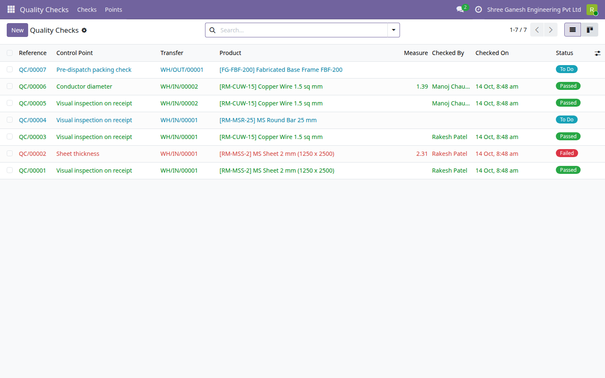
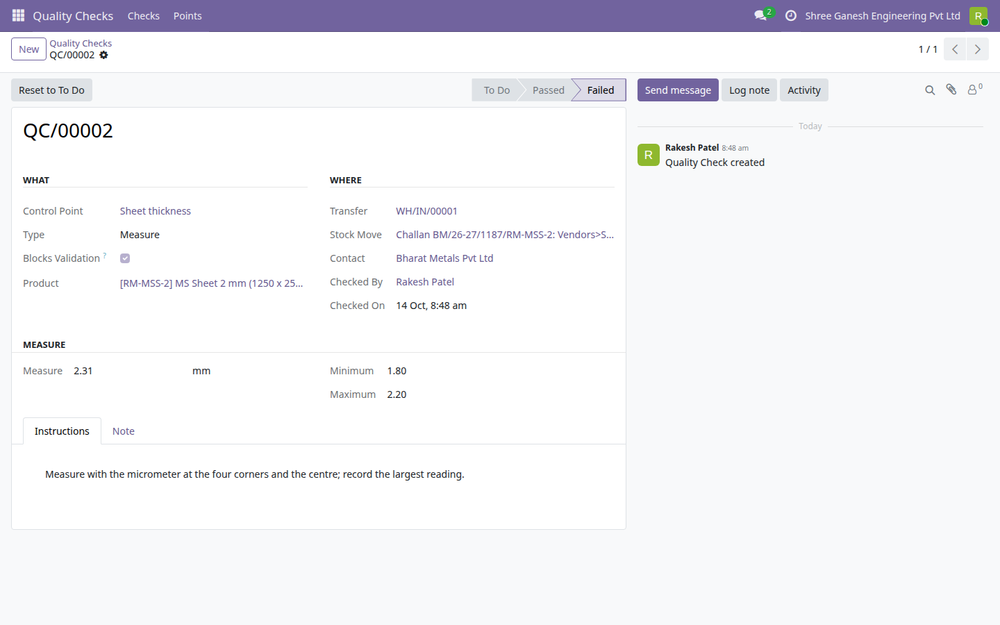
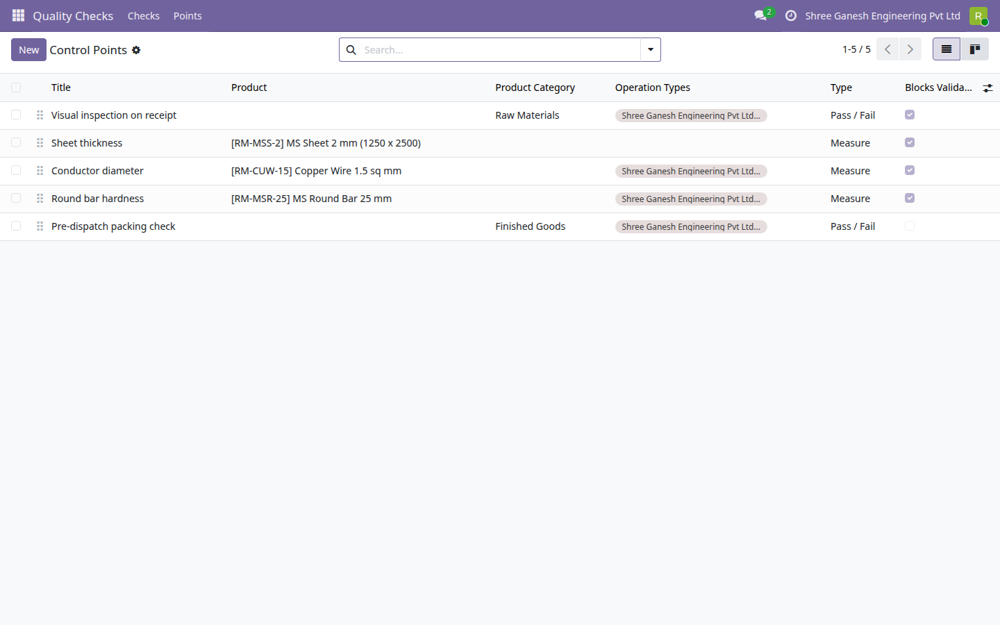
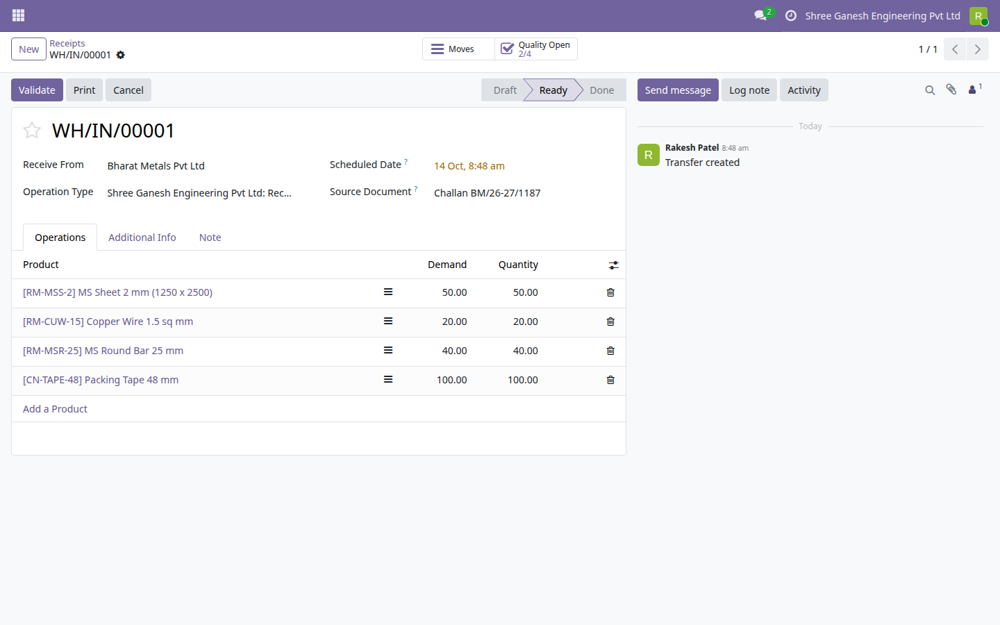

Odoo 19 Community receives and ships goods, but it has no place to record whether the goods were actually inspected before they went on the shelf or out of the door. This module adds that one record, and the rule that goes with it: a transfer with an open or failed blocking check cannot be validated.

The Quality Checks list with the To Do filter removed: seven checks on two receipts and a delivery, passed, failed and to do, with a measure shown only on the two measured checks (1.39 and 2.31).

Check QC/00002: the MS sheet read 2.31 mm against a tolerance of 1.80 to 2.20 mm, so Record Measure failed it on its own, with the inspector, date and instructions on the record.

Control Points: a pass/fail visual inspection for the Raw Materials category, three measured points on single products (sheet thickness, conductor diameter, round bar hardness) and a non-blocking pass/fail packing check for Finished Goods.

Receipt WH/IN/00001 from Bharat Metals Pvt Ltd: the Quality Open button reads 2/4, two of its four checks not passed (one failed, one still to do), so the receipt cannot be validated yet.
Say what must be checked: a product or a whole product category, on chosen operation types or on all of them, with written instructions the inspector reads on the spot.
A plain decision, or a measured value with minimum, maximum and unit. A measure outside the range fails on its own; nobody has to remember the tolerance.
Confirming a transfer creates one check per matching move, whoever confirms it. Confirming again or adding a move raises only what is missing, a cancelled move drops its open checks, and a check follows its move into a backorder.
A transfer cannot be validated while a blocking check on the goods being validated is still to do or has failed. The error lists the checks. Mark a point non-blocking to record without holding the goods.
QC/00001 onward, each linked to its transfer, move, product and lot, with who decided, when, a note and a chatter for photos.
A smart button shows open / total checks, and a transfer filter lists everything that still has something to inspect.
E-Way Bill Expiry Watch (India) · Indian Financial Year Numbering · GST Outward and Inward Summary (India) · Rupee Amounts in Words (Lakh and Crore) · Indian Invoice Print Extras · MSME Vendor Payment Tracking (India) · India Partner Identifier Validation · Indian Payroll Components (PF, ESI, PT) · India TDS Rate and Deduction Register · UPI Payment QR on Invoices (India) · Fixed Asset Register (Lite) · Branches (Lite) · Account Budgets (Lite) · Knowledge Base (Lite) · Label Designer (Lite) · Material Request (Lite) · Password Vault (Lite) · Proforma Invoice · Support Tickets (Lite)
Need the full version? The paid drkds Quality Control app adds sampling plans, checklists and worksheets, quarantine of failed goods, quality alerts, checks on manufacturing orders and pass-rate reporting.
Odoo 19 Community · Licence LGPL-3 · Free and open source
Part of the drkds Indian SME suite for Odoo 19 Community.
Support: jyotinboghani@gmail.com · drkdsinfo.com